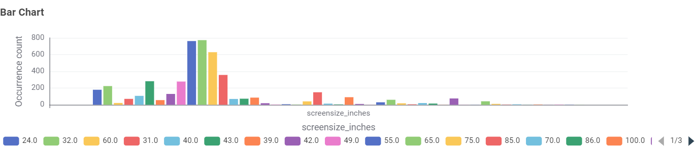
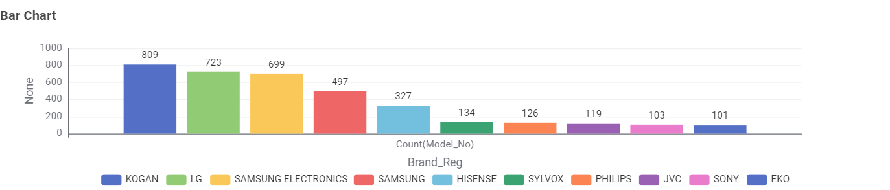
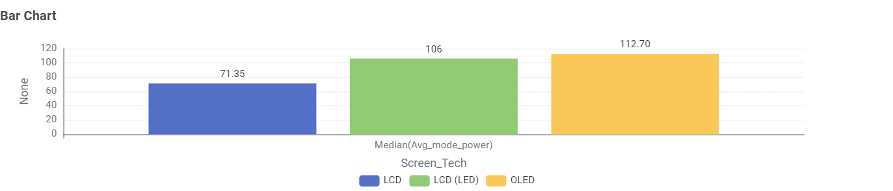
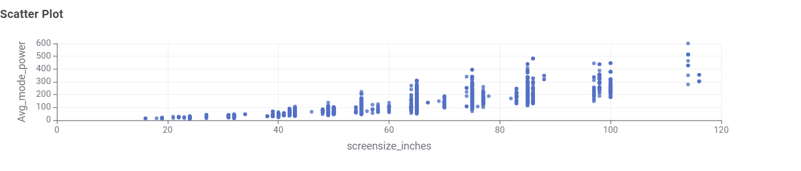
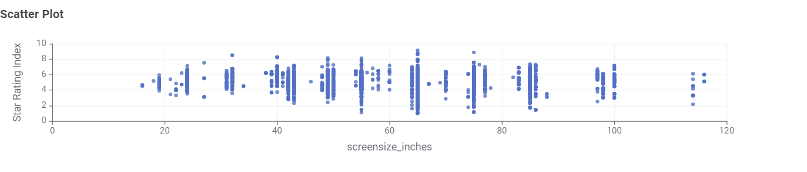
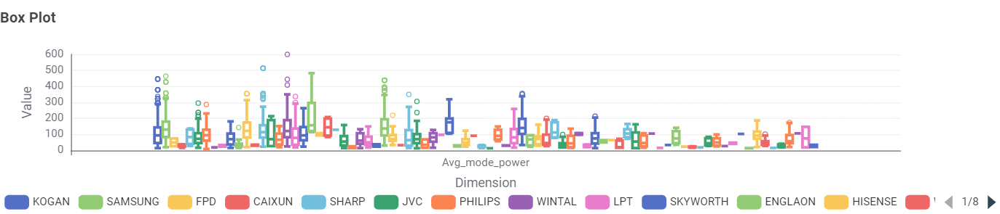

Television Energy Tips
Size and technology matter. Larger screens draw more power, and older technologies such as plasma (phased out of the Australian market around 2016) used far more electricity than modern sets. Today's LED/LCD and OLED televisions are dramatically more efficient for their screen size.
- Use the TV's Energy Saver or Eco picture mode, and lower the brightness to a comfortable level — showroom brightness is not living-room brightness.
- Switch the TV off at the wall when not in use. Even in standby, a TV can keep drawing a few watts, around the clock.
- Disable “always-listening” voice-assistant features if you do not use them; they add to standby consumption.
- Compare the star rating and the annual kWh figure on the Energy Rating Label before buying — the kWh number is your estimated yearly electricity use.
- As a rough guide, a modern 55″ TV uses on the order of 100–150 W while on; a 75″ set can use 200 W or more.
TV Energy Insights: Data Story
This section presents findings from the Australian Government’s Television Energy Rating dataset (GEMS registrations), helping consumers make informed decisions about technology, size, brand and efficiency. Seven key questions guide the analysis — each will be answered with an interactive D3.js chart as the project progresses.
Key Questions
- What type of TV screen technologies are currently available in Australia and which are the most frequent?
- What screen sizes are available and which are most frequent?
- Which brands have the largest number of models?
- Which type of screen technology consumes the least amount of power?
- What is the relationship between screen size and power use?
- What is the relationship between star rating and screen size?
- Are there differences in power consumption between brands?
Q1 — What TV technologies are most common?
Pie Chart - Screen Tech
Answer: LCD (LED) represents the largest share of screen technology with 3,797 units, followed by standard LCD (484) and OLED (292).
Q2 — What screen sizes are most common?
Bar Chart - Screen Size Distribution

Answer: The most frequently occurring screen sizes in the dataset are 55.0 and 65.0 inches
Q3 — Which brands have the largest number of models?
Bar Chart - Brand Distribution

Answer: Kogan has the highest number of registered television models (809), closely followed by LG (723) and Samsung Electronics (699).
Q4 — Which technology consumes the least power?
Bar Chart - Median Power by Screen Tech

Answer: OLED displays have the highest median average mode power at 112.70, compared to LCD (LED) at 106 and standard LCD at 71.35.
Q5 — Screen size vs. power use
Scatter Plot - Screen Size vs. Power

Answer: There is a positive correlation between screen size in inches and average mode power consumption.
Q6 — Star rating vs. screen size
Scatter Plot - Screen Size vs. Star Rating

Answer: Star rating indices are distributed across various screen sizes, with the highest concentrations occurring around common consumer dimensions.
Q7 — Power consumption differences between brands
Box Plot - Power Distribution by Brand

Answer: Power consumption variability differs significantly across brands, with some manufacturers showing wider interquartile ranges than others.